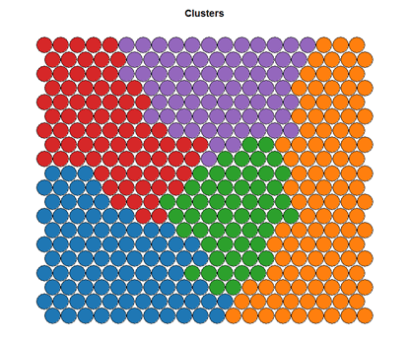

10.5 Самоорганизующиеся карты Кохонена
Самоорганизующиеся карты (SOM, Self Organizing Maps), разработанные Т. Кохоненом (Kohonen, 1982), представляют собой мощный инструмент, объединяющий две важные парадигмы анализа данных – кластеризацию и проецирование, т.е. визуализацию многомерных данных на плоскости. В отличие от рассмотренной в разделах 7.7 и 8.2 нейронной сети обратного распространения, процедура настройки SOM относится к алгоритмами обучения без учителя.
Сеть Кохонена имеет всего два слоя: входной и выходной, составленный из радиальных нейронов упорядоченной структуры (выходной слой называют также слоем топологической карты, или “экраном”). Нейроны выходного слоя располагаются в узлах двумерной сетки с прямоугольными или шестиугольными ячейками. Количество нейронов в сетке \(p\) определяет степень детализации результата работы алгоритма, и, в конечном счете, от этого зависит точность обобщающей способности карты.
Самоорганизующиеся карты в ходе своего обучения анализируют характер расположения точек входного слоя в m-мерном пространстве и стремятся воспроизвести на выходе нейронной сети топологический порядок и определенную степень регулярности исходных данных (т.е. метрическую близость векторов). Подгонка SOM заключается в итеративной настройке вектора весовых коэффициентов \(\boldsymbol{w}_j\) каждого нейрона, \(j = 1, 2 \dots, p\), для чего используется модифицированный алгоритм соревновательного обучения Хебба, который учитывает не только вклад нейрона-победителя, но и ближайших его соседей, расположенных в \(R\)-окрестности:
- На стадии инициализации всем весовым коэффициентам присваиваются небольшие случайные значения \(w_{ij}^0, i = 1, 2, \dots, m\).
- На выходы сети подаются последовательно в случайном порядке образы \(\mathbf{y}\) объектов входного слоя и для каждого из них выбирается “нейрон-победитель” (BMU, Best Matching Unit) с минимальным расстоянием \(\sum_{i=1}^m (y_i - w_{ij}^t)\) - см. рис. 10.19.
- Определяется подмножество “ближайшего окружения” BMU, радиус которого \(R\) уменьшается с каждой итерацией \(t\).
- Пересчитываются веса \(\boldsymbol{w}_j^t\) выделенных узлов с учетом их расстояний до нейрона-победителя и близости к вектору \(\mathbf{y}\).
Рисунок 10.19: Схема активации нейронов в сети Кохонена
Шаги 2-4 алгоритма повторяются, пока выходные значения сети не будут стабилизированы с заданной точностью. При этом качество проецирования многомерных данных на плоскость достигается в SOM на нескольких уровнях: сохранение топологии (т.е. на множествах точек исходных данных и нейронов обученной сети структура соседства одинакова), сохранение порядка (т.е. расстояния между эквивалентными парами точек пропорциональны) и сохранение метрических свойств при сжатии пространства.
“Проекционный экран” в результате обучения приобретает свойства упорядоченной структуры, в которой величины синапсов нейронов плавно меняются вдоль двух измерений. Цвет и расположение фрагментов двумерной решетки используется для анализа закономерностей, связываемых с компонентами набора данных. В частности, с каждым узлом (нейроном) могут ассоциироваться локальные сгущения исходных объектов, которые могут служить потенциальными центрами кластеров.
Для обучения сети обычно используются функции somgrid() и som() из пакета kohonen. По завершении итерационного процесса функции plot() становится доступным для визуализации следующий комплект карт:
"codes"- показывается распределение по решетке соотношение долей участия отдельных исходных переменных;"counts"- число исходных объектов в каждом узле сети;"mapping"- координаты исходных объектов на сформированной карте;"property","quality","dist.neighbours"- различными цветами изображается целый набор свойств каждого узла: доли участия отдельных исходных переменных, меры парных или средних расстояний между нейронами и т.д.
Опять воспользуемся в качестве примера набором Boston из пакета MASS. Чтобы график "codes" был более лаконичен, из исходного набора признаков выделим 7 переменных, предположительно наиболее значимых для кластеризации (см. рис. 10.13). Смысл сокращенных наименований переменных приведен в разделе 10.3. Выполним предварительно стандартизацию данных.
Укажем функции somgrid() создать для проекционного экрана гексагональную решетку 69, т.е. 506 земельных участков Бостона будут “самоорганизовываться” на 54 нейронах выходного слоя:
data(Boston, package = "MASS")
VarName = c("indus", "dis", "nox", "medv", "lstat", "age", "rad")
# отбор переменных для обучения SOM
data_train <- Boston[, VarName]
data_train_matrix <- as.matrix(scale(data_train))
library(kohonen)
set.seed(123)
som_grid <- somgrid(xdim = 9, ydim = 6, topo = "hexagonal")
som_model <- som(data_train_matrix, grid = som_grid, rlen = 100,
alpha = c(0.05,0.01), keep.data = TRUE)
plot(som_model, type = "changes")
Рисунок 10.20: Снижение среднего расстояния до ближайших нейронов в ходе 100 итераций (rlen) обучения сети SOM при заданных значениях гипер-параметра alpha
Выполним теперь визуализацию комплекта карт Кохонена с разными управляющими параметрами функции plot().
# Зададим палитру цветов
coolBlueHotRed <- function(n, alpha = 1) {
rainbow(n, end = 4/6, alpha = alpha)[n:1]
}
par(mfrow = c(2, 1))
# Сколько объектов связано с каждым узлом?
plot(som_model, type = "counts", palette.name = coolBlueHotRed)
# Каково среднее расстояние объектов узла до его прототипов?
plot(som_model, type = "quality", palette.name = coolBlueHotRed)
Рисунок 10.21: Карты SOM типа "counts" и "quality"
Тип карты "mapping" позволяет получить распределение объектов по узлам, удовлетворяющее любому заданному условию. Например, мы желаем выделить участки с низкой долей афроамериканцев (black - признак, который в настройке сети не участвовал). А также показать, как при этом распределяются доли участия отдельных исходных переменных:
colB <- ifelse(Boston$black <= 100, "red", "gray70")
par(mfrow = c(2, 1))
plot(som_model, type = "mapping", col = colB, pch = 16)
plot(som_model, type = "codes")
Рисунок 10.22: Карты SOM типа "mapping" и "codes"
Поскольку объединенная карта "codes" не всегда бывает хорошо интерпретируемой, можно получить карту распределения любого показателя в его стандартизованной или натуральной шкале:
par(mfrow = c(2, 1))
plot(som_model, type = "property",
property = som_model$codes[[1]][,1],
main = "indus - доля домов, продаваемых в розницу",
palette.name = coolBlueHotRed)
var_unscaled <- aggregate(as.numeric(data_train[, 3]),
by = list(som_model$unit.classif),
FUN = mean, simplify = TRUE)[, 2]
plot(som_model, type = "property", property = var_unscaled,
main = "nox - содержание окислов азота",
palette.name = coolBlueHotRed)Рисунок 10.23: Карты SOM для стандартизованного и исходного показателя
Естественно, что значения активации каждого нейрона по каждому предиктору можно использовать для группировки узлов. Зададимся числом кластеров \(k = 5\) и выполним иерархическую кластеризацию (по умолчанию используются method = "complete" и distance = "euclidean"). Можно построить карты типа "mapping" (с метками объектов) или "codes" (с распределением доли вклада переменных). Остановимся на втором типе:
## Формируем матрицу "узлы переменные"
mydata <- as.matrix(som_model$codes[[1]])
# Используем иерархическую кластеризацию с порогом при k=5
som_cluster <- cutree(hclust(dist(mydata)), 5)
# Определяем палитру цветов
pretty_palette <- c("#1f77b4", '#ff7f0e', '#2ca02c',
'#d62728', '#9467bd', '#8c564b', '#e377c2')
# Показываем разными цветами кластеры узлов и переменные
plot(som_model, type = "codes",
bgcol = pretty_palette[som_cluster])
add.cluster.boundaries(som_model, som_cluster) Рисунок 10.24: Кластеризация узлов карты SOM
Традиционно метод Кохонена рассматривается как эмпирический алгоритм, а выводы (в первую очередь, качественные) о структуре данных делаются на основе визуального анализа представленных карт. Основная трудность применения SOM, как и в случае анализа главных компонент, заключается в смысловой интерпретации топологии сети и связывании ее отдельных участков с некоторыми конкретными обобщениями из предметной области.
Однако алгоритм SOM нашел широкое применение в ГИС-технологиях, поскольку легко реализовать информационную цепочку от исходной таблицы к узлам решетки, а от них - к конкретным координатам на географической карте. Например, участники коллектива “Dublin R Users Group” использовали результаты переписи населения 2011 г., разбили территорию Дублина на 18500 маленьких площадок и описали проживающее на них население с использованием 767 переменных из 15 разделов. На ресурсах (https://www.r-bloggers.com, http://www.slideshare.net) доступны полный комплект исходных данных, подробное описание и скрипты R. Основные результаты представлены на рис. 10.25:

Рисунок 10.25: Кластерная форма карты SOM и ее отображение на карте Дублина (категории от 1 до 6 связываются с градациями жилой застройки и обеспеченности населения - от трущоб до благополучных элитных районов)
Похожий подход использован в программе ScanEx IMAGE Processor v3.6 (http://www.scanex.ru), руководство к которой содержит также достаточно подробное русскоязычное описание техники расчетов и формул, применяемых при обучении SOM.